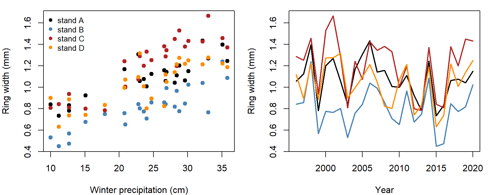
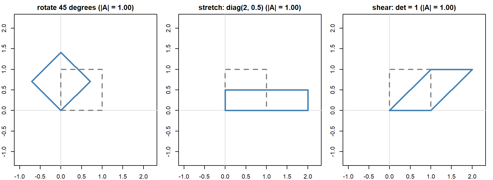
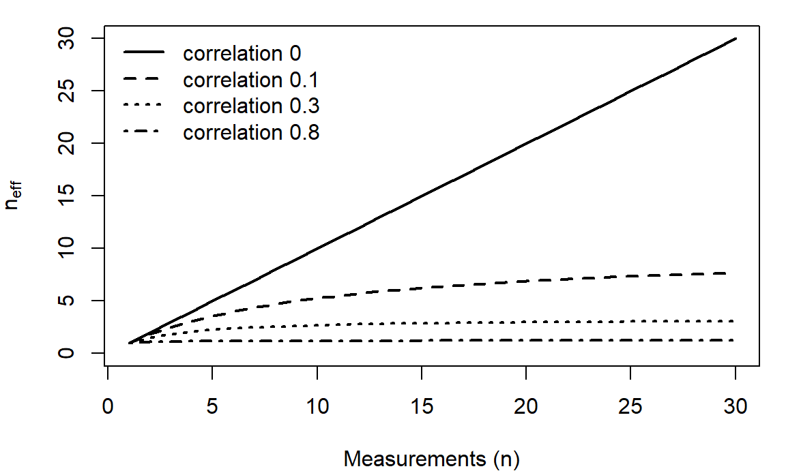
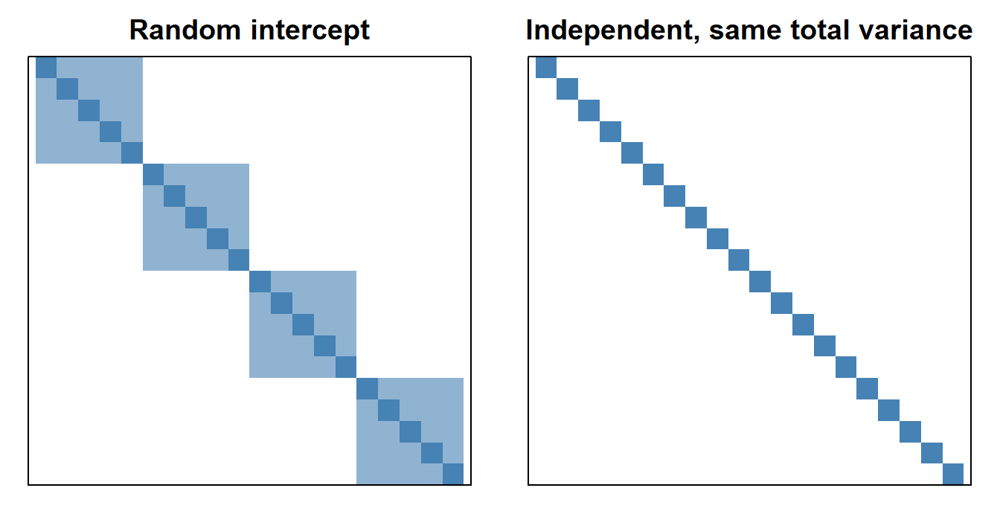
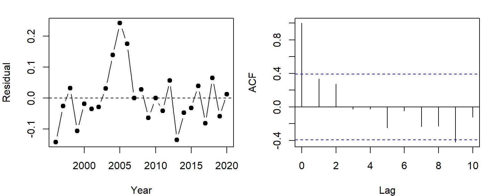
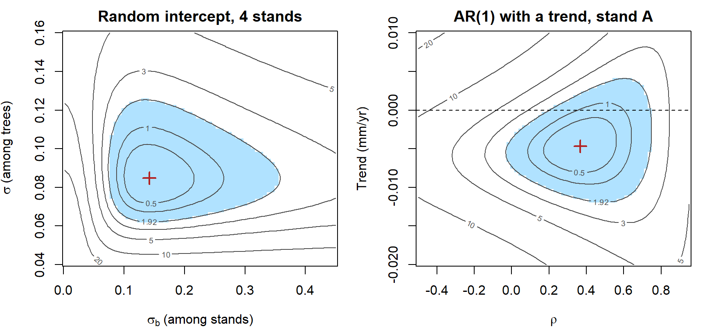
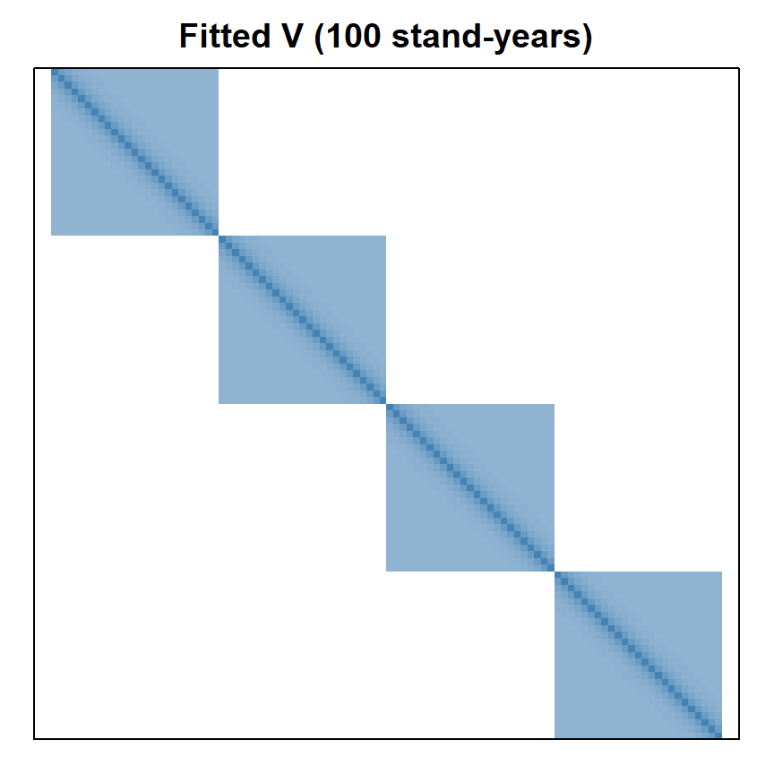

Week 11: Linear Models, Matrices, and Modeling Variance
NRES 746
Nov. 2-4, 2026
R code from this page is also in the companion script. Packages: mvtnorm, lme4, nlme.
This material follows Bolker, Ecological Models and Data in R, Chapter 9 (pp. 394-417), Appendix A.8 (pp. 484-485), and Chapter 10 (pp. 418-428).
Standard statistics as likelihood models
Regression, ANOVA, ANCOVA, and generalized linear models are usually taught as separate procedures with their own tables and tests. Each one is a data-generating model with a likelihood we could write ourselves. This part fits one of them both ways, shows how R turns a model formula into a matrix, and extends the idea to non-normal responses.
1. Big picture

So far we have built custom models: pick a deterministic function, pick a distribution for the noise, write the negative log-likelihood (NLL), and minimize it. Bolker's Chapter 9 makes a useful point: the procedures in an intro stats course are special cases of the same recipe, with a linear deterministic part and (usually) Normal noise.
lm()fits \(Y \sim \text{Normal}(\text{linear function}, \sigma^2)\). Regression, ANOVA, and ANCOVA differ only in what goes into the linear function.glm()keeps the linear function but passes it through a link and swaps the Normal for another distribution.- Both assume every observation is independent given the predictors. That is the assumption we'll relax in Modeling variance.
Canned procedures are fast and well tested, so use them when the model fits. Knowing the model behind each one tells you when it doesn't.
2. WOD: linear or not?
The WOD (a short warm-up exercise at the start of class) listed several models and asked which ones lm() or glm() could fit. The key word in "linear model" is linear in the parameters, not in \(x\):
- \(\mu = a + bx + cx^2\) is a curve, but each parameter enters as a coefficient times something we know. Rename \(x^2\) as \(w\) and it's multiple regression.
- \(\mu = ax^b\) is nonlinear: \(b\) sits in an exponent. (Taking logs makes it linear, but only if the noise is multiplicative.)
- \(\mu = \exp(a + bx)\) is nonlinear as written, but its log is linear. That is a GLM with a log link.
A model is linear in a parameter if its second derivative with respect to that parameter is 0 (Bolker p. 398).
3. One model behind lm()
Here's the example for the week. Pinyon pine ring widths track precipitation: wet winters make wide rings. We have increment cores from 5 trees in each of 4 stands, with ring widths for 1996-2020. These data are simulated, so we know the true model. Averaging the 5 trees in a stand gives one chronology per stand: 4 stands \(\times\) 25 years = 100 values.
# pinyon ring widths (mm): 4 stands x 5 trees x 25 years; simulated
set.seed(21)
years <- 1996:2020
n_yr <- length(years)
precip <- round(rgamma(n_yr, shape = 9, scale = 22 / 9), 1) # winter precipitation (cm)
stand_eff <- rnorm(4, 0, 0.12)
ar_dev <- matrix(0, 4, n_yr) # shared year-to-year deviations within each stand
for (j in 1:4) {
ar_dev[j, 1] <- rnorm(1, 0, 0.08 / sqrt(1 - 0.6^2))
for (t in 2:n_yr) ar_dev[j, t] <- 0.6 * ar_dev[j, t - 1] + rnorm(1, 0, 0.08)
}
rings <- expand.grid(year = years, tree = 1:5, stand = LETTERS[1:4])
rings$tree_id <- paste0(rings$stand, rings$tree)
tree_eff <- setNames(rnorm(20, 0, 0.1), unique(rings$tree_id))
j <- match(rings$stand, LETTERS)
t <- match(rings$year, years)
rings$precip <- precip[t]
rings$width <- round(0.35 + stand_eff[j] + tree_eff[rings$tree_id] + 0.025 * rings$precip +
ar_dev[cbind(j, t)] + rnorm(nrow(rings), 0, 0.1), 2)
# stand chronologies: mean of the 5 trees in each stand and year
chron <- aggregate(width ~ stand + year + precip, data = rings, FUN = mean)
chron <- chron[order(chron$stand, chron$year), ]
head(chron)## stand year precip width
## 57 A 1996 26.8 1.058
## 49 A 1997 24.7 1.124
## 93 A 1998 35.1 1.396
## 9 A 1999 12.7 0.780
## 73 A 2000 28.8 1.202
## 89 A 2001 33.0 1.268
An ANCOVA (analysis of covariance) gives each stand its own intercept and shares one precipitation slope:
\[\text{width}_{jt} \sim \text{Normal}(a_j + b\,\text{precip}_t, \sigma^2)\]
for stand \(j\) in year \(t\). Written as a custom likelihood:
# ANCOVA: one intercept per stand (a[1:4]), shared slope b; sigma on the log scale
nll_ancova <- function(par, dat) {
a <- par[1:4]
b <- par[5]
sigma <- exp(par[6])
mu <- a[as.integer(dat$stand)] + b * dat$precip
-sum(dnorm(dat$width, mu, sigma, log = TRUE))
}
chron$stand <- factor(chron$stand)
fit_ancova <- optim(c(rep(0.5, 4), 0, log(0.1)), nll_ancova, dat = chron,
method = "BFGS", control = list(maxit = 1000))
fit_lm <- lm(width ~ 0 + stand + precip, data = chron) # 0 + : one intercept per stand
cbind(optim = fit_ancova$par[1:5], lm = coef(fit_lm))## optim lm
## standA 0.4986454 0.49864628
## standB 0.2260867 0.22608628
## standC 0.6338448 0.63384628
## standD 0.4579261 0.45792628
## precip 0.0240144 0.02401439c(optim = exp(fit_ancova$par[6]), lm = summary(fit_lm)$sigma)## optim lm
## 0.1105699 0.1134400The coefficients agree to several decimal places. The two \(\sigma\) values differ slightly: the MLE divides the sum of squared residuals by \(n = 100\), while lm() divides by \(n - 5\) to remove a small bias.
What lm() adds is speed and exactness. For a Normal linear model the MLE has a closed form (see Linear algebra), so lm() solves for it directly instead of searching.
Question: Each precipitation value is shared by all four stands in a year. Does that matter for the independence assumption?
4. The model matrix
To fit a formula, R builds a model matrix \(X\), with one row per observation and one column per coefficient. The model is then
\[\mathbf{y} = X\boldsymbol\beta + \boldsymbol\varepsilon, \qquad \varepsilon_i \sim \text{Normal}(0, \sigma^2) \text{ independently}\]
Here are the rows for 1996 (one per stand) under two codings of the same model:
rows_1996 <- chron$year == 1996
model.matrix(~ 0 + stand + precip, data = chron)[rows_1996, ] # one column per stand## standA standB standC standD precip
## 57 1 0 0 0 26.8
## 58 0 1 0 0 26.8
## 59 0 0 1 0 26.8
## 60 0 0 0 1 26.8model.matrix(~ stand + precip, data = chron)[rows_1996, ] # R's default coding## (Intercept) standB standC standD precip
## 57 1 0 0 0 26.8
## 58 1 1 0 0 26.8
## 59 1 0 1 0 26.8
## 60 1 0 0 1 26.8coef(lm(width ~ stand + precip, data = chron))## (Intercept) standB standC standD precip
## 0.49864628 -0.27256000 0.13520000 -0.04072000 0.02401439The default coding (treatment contrasts) has an intercept column of 1s, and its other stand columns are 0/1 indicators for B, C, and D. So the intercept is stand A's intercept, and standB is how much B differs from A. The fitted values are the same under either coding; only the meaning of the coefficients changes.
- A factor with \(k\) levels becomes \(k - 1\) indicator columns plus the intercept.
- A continuous predictor becomes one column of its values.
- An interaction (
stand:precip) multiplies columns together, giving each stand its own slope.
Question: In a model with an intercept, why can't R include indicator columns for all four stands?
5. Generalized linear models
A GLM keeps the linear predictor \(\eta = X\boldsymbol\beta\) and changes two things (Bolker 9.4):
- a link function \(g\) connects the mean to the linear predictor, \(g(\mu) = \eta\), so the mean stays in its allowed range;
- the Normal is replaced by another distribution (Poisson, binomial, Gamma, and others).
| Response | Distribution | Usual link | Mean |
|---|---|---|---|
| Counts | Poisson | log | \(\mu = e^{\eta}\) |
| Successes out of \(N\) | Binomial | logit | \(p = 1/(1 + e^{-\eta})\) |
| Positive, right-skewed | Gamma | log (or inverse) | \(\mu = e^{\eta}\) |
The second row (Binomial with logit link) might look familiar from earlier in the course- it is also known as 'logistic regression'. Here is the Poisson row, with simulated counts of cones on one branch of each of the 20 trees, against each tree's mean ring width:
tree_means <- aggregate(width ~ stand + tree_id, data = rings, FUN = mean)
set.seed(5)
tree_means$cones <- rpois(20, exp(-0.5 + 3 * tree_means$width))
# Poisson GLM by hand: log(mu) = a + b * width
nll_pois <- function(par) {
-sum(dpois(tree_means$cones, exp(par[1] + par[2] * tree_means$width), log = TRUE))
}
fit_pois <- optim(c(0, 1), nll_pois, method = "BFGS")
fit_glm <- glm(cones ~ width, family = poisson, data = tree_means)
cbind(optim = fit_pois$par, glm = coef(fit_glm))## optim glm
## (Intercept) -0.5856404 -0.5856404
## width 3.1302614 3.1302612Same answer again. glm() gets there by iteratively reweighted least squares, which repeats a weighted lm()-style solve until it converges. It's fast but limited to the families and links it knows. Overdispersed counts need a negative binomial (MASS::glm.nb()), and anything outside the list (a nonlinear mean, a mixture) needs a custom likelihood.
Discussion
Q1. The ANCOVA residuals from consecutive years in the same stand have a correlation of 0.45. Which of the model's assumptions does that break? If we added year to the model to test whether growth is declining, would you trust the standard error lm() reports for that trend?
Q2. We treated stand as a fixed factor with its own intercept. A manager wants to predict ring widths in a fifth stand that wasn't sampled. What can this model say about it?
Bonus: nonlinear least squares
When the mean is nonlinear in a parameter but the noise is still Normal, nls() minimizes the sum of squared residuals by a Gauss-Newton search (Bolker 9.3). That is the same as maximizing a Normal likelihood with optim(), and it needs starting values too. For example, a saturating response of ring width to precipitation:
fit_nls <- nls(width ~ a * precip / (b + precip), data = chron,
start = list(a = 1.5, b = 20))
coef(fit_nls)## a b
## 2.067905 22.965646Linear algebra for statistics
Models with structured variance are written with vectors and matrices. This part covers the matrix operations we need: multiplying, transposing, inverting, and the determinant. It closes with the multivariate normal distribution, which ties them together. It follows and extends Bolker's "cheater's guide" (Appendix A.8).
1. Vectors and matrices
- A vector is a list of numbers, written in bold lowercase (\(\mathbf{y}\), \(\boldsymbol\beta\)). By default a vector is a column.
- A matrix is a rectangle of numbers, written in uppercase (\(X\), \(V\)). An \(n \times p\) matrix has \(n\) rows and \(p\) columns. Element \(x_{ij}\) is in row \(i\), column \(j\).
- In R,
matrix(1:6, nrow = 2)fills a 2 \(\times\) 3 matrix column by column;dim()gives its size.
A <- matrix(c(2, 1, 0, 3, -1, 4), nrow = 2)
A## [,1] [,2] [,3]
## [1,] 2 0 -1
## [2,] 1 3 4dim(A)## [1] 2 3A[2, 3] # row 2, column 3## [1] 42. Matrix multiplication
To multiply \(A\) (\(n \times k\)) by \(B\) (\(k \times p\)), take each row of \(A\) and each column of \(B\), multiply them element by element, and add:
\[(AB)_{ij} = \sum_{m=1}^{k} a_{im} b_{mj}\]
The result is \(n \times p\). The inner sizes must match (\(k\)); otherwise the product doesn't exist. In R, use %*% (plain * multiplies element by element).
The model matrix is the main use. Each row of \(X\boldsymbol\beta\) is one observation's predicted mean. With the default coding from the model matrix, a stand C tree in a year with 30 cm of precipitation has row \((1, 0, 1, 0, 30)\), so
\[\mu = 1 \cdot \beta_0 + 0 \cdot \beta_B + 1 \cdot \beta_C + 0 \cdot \beta_D + 30\,\beta_{\text{precip}} = \beta_0 + \beta_C + 30\,\beta_{\text{precip}}\]
X <- model.matrix(~ stand + precip, data = chron)
beta_hat <- coef(lm(width ~ stand + precip, data = chron))
mu_hat <- X %*% beta_hat # 100 x 5 times 5 x 1 = 100 x 1
all.equal(as.vector(mu_hat), unname(fitted(lm(width ~ stand + precip, data = chron))))## [1] TRUETwo habits from ordinary arithmetic fail for matrices:
- Order matters: \(AB\) and \(BA\) usually differ, and one of them may not even exist.
- Don't divide by a matrix. Multiply by its inverse instead (section 3).
3. Transpose, identity, and inverse
- The transpose \(A^T\) swaps rows and columns (
t(A)). The inner product \(\mathbf{x}^T\mathbf{x} = \sum_i x_i^2\) is a sum of squares, so the residual sum of squares is \((\mathbf{y} - X\boldsymbol\beta)^T(\mathbf{y} - X\boldsymbol\beta)\). - The identity matrix \(I\) has 1s on the diagonal and 0s elsewhere (
diag(n)). \(AI = A\), like multiplying by 1. - The inverse \(A^{-1}\) satisfies \(AA^{-1} = I\) (
solve(A)). Only square matrices can have one, and not all do. For a 2 \(\times\) 2 matrix,
\[\begin{pmatrix} a & b \\ c & d \end{pmatrix}^{-1} = \frac{1}{ad - bc}\begin{pmatrix} d & -b \\ -c & a \end{pmatrix}\]
The inverse doesn't exist when \(ad - bc = 0\).
Minimizing the residual sum of squares (setting its derivatives to 0) gives the normal equations and the least-squares estimate:
\[X^TX\,\hat{\boldsymbol\beta} = X^T\mathbf{y} \quad\Longrightarrow\quad \hat{\boldsymbol\beta} = (X^TX)^{-1}X^T\mathbf{y}\]
For Normal errors this is also the MLE.
XtX <- t(X) %*% X
XtX # 5 x 5## (Intercept) standB standC standD precip
## (Intercept) 100.0 25.0 25.0 25.0 2403.20
## standB 25.0 25.0 0.0 0.0 600.80
## standC 25.0 0.0 25.0 0.0 600.80
## standD 25.0 0.0 0.0 25.0 600.80
## precip 2403.2 600.8 600.8 600.8 63017.84beta_ne <- solve(XtX, t(X) %*% chron$width) # solves XtX beta = Xty
cbind(normal_eq = as.vector(beta_ne), lm = beta_hat)## normal_eq lm
## (Intercept) 0.49864628 0.49864628
## standB -0.27256000 -0.27256000
## standC 0.13520000 0.13520000
## standD -0.04072000 -0.04072000
## precip 0.02401439 0.02401439Question: Suppose \(X\) also had an indicator column for stand A. What would go wrong when we call
solve(XtX)?
solve(A, b) solves \(A\mathbf{x} = \mathbf{b}\) without forming \(A^{-1}\), which is faster and more accurate. (lm() uses a related method, the QR decomposition.)
4. Determinant and quadratic form
- The determinant \(|A|\) (
det(A)) is a single number for a square matrix. For 2 \(\times\) 2 it's \(ad - bc\). For a diagonal matrix it's the product of the diagonal. Geometrically, it's the factor by which \(A\) scales areas (volumes, in higher dimensions); \(|A| = 0\) means \(A\) flattens space and has no inverse. - A quadratic form \(\mathbf{x}^TA\mathbf{x}\) turns a vector into a single number. With \(A = I\) it's the sum of squares.
The multivariate normal (MVN) density for a vector \(\mathbf{y}\) of \(n\) observations, with mean vector \(\boldsymbol\mu\) and variance-covariance matrix \(V\), uses both (Bolker eq. 10.3.1):
\[f(\mathbf{y}) = \frac{1}{\sqrt{(2\pi)^n|V|}} \exp\!\left(-\tfrac{1}{2}(\mathbf{y} - \boldsymbol\mu)^TV^{-1}(\mathbf{y} - \boldsymbol\mu)\right)\]
Compare the univariate normal, \(\frac{1}{\sqrt{2\pi\sigma^2}}\exp\!\left(-\tfrac{1}{2}(y - \mu)(\sigma^2)^{-1}(y - \mu)\right)\):
- \(V^{-1}\) plays the role of dividing by \(\sigma^2\).
- The quadratic form plays the role of the squared deviation.
- \(|V|\) plays the role of \(\sigma^2\) in the normalizing constant.
\(V\) holds variances on its diagonal and covariances off it: \(V_{ij} = \text{Cov}(y_i, y_j) = \rho_{ij}\sigma_i\sigma_j\), where \(\rho_{ij}\) is the correlation. When the observations are independent with equal variance, \(V = \sigma^2 I\) and the MVN is a product of \(n\) univariate normals:
library(mvtnorm)
r <- resid(fit_lm)
sigma_mle <- sqrt(mean(r^2))
c(sum_dnorm = sum(dnorm(r, 0, sigma_mle, log = TRUE)),
dmvnorm = dmvnorm(r, rep(0, 100), sigma_mle^2 * diag(100), log = TRUE))## sum_dnorm dmvnorm
## 78.3189 78.3189(emdbook::dmvnorm(), used in Bolker's text, gives the same value.)
5. Valid covariance matrices
Not every matrix can be a covariance matrix. It must be:
- square and symmetric: \(\text{Cov}(y_i, y_j) = \text{Cov}(y_j, y_i)\);
- positive definite: \(\mathbf{x}^TV\mathbf{x} > 0\) for every nonzero \(\mathbf{x}\). Since \(\mathbf{x}^TV\mathbf{x}\) is the variance of the weighted sum \(\sum_i x_iy_i\), this says no combination of the observations can have zero or negative variance.
The practical check is that every eigenvalue is positive (eigen(V)$values). Eigenvalues are numbers \(\lambda\) for which \(V\mathbf{v} = \lambda\mathbf{v}\) for some vector \(\mathbf{v}\): along those directions \(V\) only stretches. A correlation of \(\pm 1\) gives an eigenvalue of 0 (positive semidefinite), and the MVN density no longer exists.
V_ok <- matrix(c(4, 1, 1, 2), 2) # variances 4 and 2, covariance 1
eigen(V_ok)$values## [1] 4.414214 1.585786With \(n\) observations a covariance matrix has \(n(n+1)/2\) distinct entries, far more than the data can estimate. Every model that follows builds \(V\) from a few parameters in a way that guarantees it is positive definite.
Tools for the lab
| Task | R |
|---|---|
| Matrix product | A %*% B |
| Transpose | t(A) |
| Identity matrix, or diagonal matrix from a vector | diag(n), diag(v) |
| Inverse; solve \(A\mathbf{x} = \mathbf{b}\) | solve(A); solve(A, b) |
| Determinant; eigenvalues | det(A); eigen(A)$values |
| Model matrix from a formula | model.matrix(~ f + x, data) |
| MVN log density | mvtnorm::dmvnorm(y, mu, V, log = TRUE) |
| Random MVN draws | MASS::mvrnorm(n, mu, V) |
Bonus: matrices as transformations
Multiplying a vector by a 2 \(\times\) 2 matrix moves the point it represents. The matrix
\[R_\theta = \begin{pmatrix} \cos\theta & -\sin\theta \\ \sin\theta & \cos\theta \end{pmatrix}\]
rotates by angle \(\theta\), and a diagonal matrix stretches each axis. The determinant is the factor by which the transformation scales areas: 1 for a rotation, the product of the stretches for a diagonal matrix.

Modeling variance: random effects and autocorrelation
Every likelihood so far has been a product over independent observations. Trees in the same stand, or ring widths in consecutive years, aren't independent. This part shows how two common kinds of dependence (a shared random group effect, and correlation through time) each produce a structured covariance matrix, fits both by maximum likelihood, and shows why these fits are harder than anything we have done so far.
1. Big picture

A model has a process part and a noise part. We've spent most of the course on the process part and kept the noise simple: one variance, independent observations. Under independence the likelihood factors,
\[\mathcal{L}(\theta) = \prod_{i=1}^n f(y_i \mid \theta), \qquad \text{NLL} = -\sum_{i=1}^n \log f(y_i \mid \theta)\]
which is why nearly every NLL we've written ends in -sum(d...(..., log = TRUE)). When observations are correlated, the likelihood is a single joint density for the whole vector, and for Normal data that density is the MVN with a non-diagonal \(V\). Modeling the variance means choosing a structure for \(V\) with only a few parameters.
For the rest of the course, we will consider cases where observations are not independent, such as:
- mixed models: correlation within groups;
- time-series models: correlation between nearby times;
- spatial models: correlation between nearby places.
2. WOD: two cores from one tree
The WOD asked how precisely the mean of correlated measurements estimates the stand mean. The tool is
\[\text{Var}(X + Y) = \text{Var}(X) + \text{Var}(Y) + 2\,\text{Cov}(X, Y)\]
For \(n\) measurements with equal variance \(\sigma^2\) and equal pairwise correlation \(\rho\), the variance of the sum is the sum of all \(n^2\) entries of \(V\): \(n\) variances and \(n(n-1)\) covariances. So
\[\text{Var}(\bar y) = \frac{n\sigma^2 + n(n-1)\rho\sigma^2}{n^2} = \frac{\sigma^2}{n}\big(1 + (n-1)\rho\big)\]
Setting this equal to \(\sigma^2/n_{\text{eff}}\) gives the effective sample size, \(n_{\text{eff}} = n/(1 + (n-1)\rho)\), the number of independent measurements that would be just as precise.

As \(n\) grows, \(n_{\text{eff}}\) levels off at \(1/\rho\). Adding more correlated measurements can't make up for having few independent units.
The same idea is behind the effective sample size of an MCMC chain. In a chain the correlation between draws fades as the gap between them grows, rather than being equal for every pair, so the formula is different, but the meaning is the same. A random-walk Metropolis chain for the myxomatosis Gamma model kept 18,000 draws after burn-in, but its shape parameter had an effective sample size of only about 43. A well-tuned chain for the germination posterior got about 910 from 4,500 draws.
3. A random intercept
Take each tree's mean ring width over the 25 years: 20 numbers, 5 per stand. Trees in the same stand share soil, slope, and local climate, so they resemble each other. A random intercept model says so directly:
\[y_{ij} = \mu + b_j + \varepsilon_{ij}, \qquad b_j \sim \text{Normal}(0, \sigma_b^2), \qquad \varepsilon_{ij} \sim \text{Normal}(0, \sigma^2)\]
for tree \(i\) in stand \(j\), with all the \(b_j\) and \(\varepsilon_{ij}\) independent. Instead of estimating four stand intercepts, we treat the four stands as a sample from a population of stands and estimate the spread among them, \(\sigma_b\).
Using \(\text{Var}(X + Y) = \text{Var}(X) + \text{Var}(Y) + 2\,\text{Cov}(X, Y)\):
- \(\text{Var}(y_{ij}) = \sigma_b^2 + \sigma^2\)
- two trees in the same stand share \(b_j\): \(\text{Cov}(y_{ij}, y_{kj}) = \sigma_b^2\)
- trees in different stands share nothing: covariance 0
So \(V\) is block diagonal: one 5 \(\times\) 5 block per stand, with \(\sigma_b^2 + \sigma^2\) on the diagonal and \(\sigma_b^2\) elsewhere in the block. The correlation between two trees in the same stand, \(\sigma_b^2/(\sigma_b^2 + \sigma^2)\), is the intraclass correlation.
In matrix form, \(V = \sigma_b^2 ZZ^T + \sigma^2 I\), where \(Z\) is the 20 \(\times\) 4 matrix of stand indicators (the model matrix for ~ 0 + stand). \(ZZ^T\) has a 1 wherever two trees share a stand.
y_tree <- tree_means$width
Z <- model.matrix(~ 0 + stand, data = tree_means)
ZZt <- Z %*% t(Z)
V_ri <- function(sigma_b, sigma) sigma_b^2 * ZZt + sigma^2 * diag(20)
V_ri(0.12, 0.1)[1:7, 1:7] # first stand's block, and the start of the next## 1 2 3 4 5 6 7
## 1 0.0244 0.0144 0.0144 0.0144 0.0144 0.0000 0.0000
## 2 0.0144 0.0244 0.0144 0.0144 0.0144 0.0000 0.0000
## 3 0.0144 0.0144 0.0244 0.0144 0.0144 0.0000 0.0000
## 4 0.0144 0.0144 0.0144 0.0244 0.0144 0.0000 0.0000
## 5 0.0144 0.0144 0.0144 0.0144 0.0244 0.0000 0.0000
## 6 0.0000 0.0000 0.0000 0.0000 0.0000 0.0244 0.0144
## 7 0.0000 0.0000 0.0000 0.0000 0.0000 0.0144 0.0244
The NLL uses dmvnorm() with this \(V\); optimizing the log of each SD keeps both positive:
nll_ri <- function(par) {
V <- V_ri(exp(par[2]), exp(par[3]))
-dmvnorm(y_tree, rep(par[1], 20), V, log = TRUE)
}
fit_ri <- optim(c(mean(y_tree), log(0.1), log(0.1)), nll_ri, method = "BFGS")
c(mu = fit_ri$par[1], sigma_b = exp(fit_ri$par[2]), sigma = exp(fit_ri$par[3]))## mu sigma_b sigma
## 1.0312400 0.1419086 0.0847458library(lme4)
fit_lmer <- lmer(width ~ 1 + (1 | stand), data = tree_means, REML = FALSE)
fixef(fit_lmer)## (Intercept)
## 1.03124as.data.frame(VarCorr(fit_lmer))[, c("grp", "sdcor")]## grp sdcor
## 1 stand 0.14190887
## 2 Residual 0.08474583lmer() agrees. (By default it uses REML, a variant of maximum likelihood that corrects the downward bias in variance estimates; REML = FALSE gives the plain MLE.)
The estimated intraclass correlation is 0.74: two trees from the same stand are more alike than two trees from different stands.
Question: The variance among stands is estimated from only four stands. How much would you trust \(\hat\sigma_b =\) 0.14?
4. Autocorrelation: AR(1)
Now take stand A's chronology over 25 years and ask a management question: is growth declining, after accounting for precipitation? Regress ring width on precipitation and year, and look at the residuals:
chron_a <- chron[chron$stand == "A", ]
chron_a$year_c <- chron_a$year - 2008 # centered year: 0 = 2008
fit_lm_a <- lm(width ~ precip + year_c, data = chron_a)
summary(fit_lm_a)$coefficients## Estimate Std. Error t value Pr(>|t|)
## (Intercept) 0.568650771 0.064762246 8.780591 1.216672e-08
## precip 0.021101416 0.002580253 8.178041 4.088440e-08
## year_c -0.005505487 0.002596117 -2.120662 4.546107e-02par(mfrow = c(1, 2), mar = c(4, 4, 1.5, 1))
plot(chron_a$year, resid(fit_lm_a), type = "b", pch = 19, xlab = "Year", ylab = "Residual")
abline(h = 0, lty = 2)
acf(resid(fit_lm_a), main = "", lag.max = 10)
Wide years tend to follow wide years. (In real pinyon, stored carbohydrates and needles that live several years carry one year's conditions into the next.) The acf() panel shows the correlation between residuals \(k\) years apart.
The simplest model of this is the first-order autoregressive model, AR(1): each year's deviation is a fraction \(\rho\) of last year's plus new noise,
\[e_t = \rho\,e_{t-1} + \eta_t, \qquad \eta_t \sim \text{Normal}(0, \sigma^2), \qquad |\rho| < 1\]
Taking variances of both sides, with \(e_{t-1}\) and \(\eta_t\) independent and \(\text{Var}(e_t) = \text{Var}(e_{t-1})\) (a stationary series):
\[\text{Var}(e_t) = \rho^2\text{Var}(e_t) + \sigma^2 \quad\Longrightarrow\quad \text{Var}(e_t) = \frac{\sigma^2}{1 - \rho^2}\]
and the correlation between deviations \(k\) steps apart is \(\rho^k\) (Bolker eq. 10.3.7). So the covariance between years \(s\) and \(t\) is
\[V_{st} = \frac{\sigma^2}{1 - \rho^2}\,\rho^{|s - t|}\]
The abs(row(M) - col(M)) trick from Bolker (p. 427) builds the matrix of lags:
lags <- abs(outer(1:25, 1:25, "-"))
V_ar1 <- function(rho, sigma) sigma^2 / (1 - rho^2) * rho^lags
round(V_ar1(0.6, 0.08)[1:5, 1:5], 4)## [,1] [,2] [,3] [,4] [,5]
## [1,] 0.0100 0.0060 0.0036 0.0022 0.0013
## [2,] 0.0060 0.0100 0.0060 0.0036 0.0022
## [3,] 0.0036 0.0060 0.0100 0.0060 0.0036
## [4,] 0.0022 0.0036 0.0060 0.0100 0.0060
## [5,] 0.0013 0.0022 0.0036 0.0060 0.0100Fitting needs \(|\rho| < 1\), so we optimize \(\text{atanh}(\rho)\), which can be any number, and convert back with tanh():
# mean: a + b * precip + c * year_c; AR(1) errors with rho = tanh(par[4]), sigma = exp(par[5])
nll_ar1 <- function(par) {
mu <- par[1] + par[2] * chron_a$precip + par[3] * chron_a$year_c
V <- V_ar1(tanh(par[4]), exp(par[5]))
-dmvnorm(chron_a$width, mu, V, log = TRUE)
}
fit_ar1 <- optim(c(coef(fit_lm_a), 0, log(0.1)), nll_ar1, method = "BFGS", hessian = TRUE)
c(a = fit_ar1$par[1], b = fit_ar1$par[2], c = fit_ar1$par[3],
rho = tanh(fit_ar1$par[4]), sigma = exp(fit_ar1$par[5]))## a.(Intercept) b.precip c.year_c rho sigma
## 0.55832666 0.02140853 -0.00467618 0.36721938 0.08181305library(nlme)
fit_gls <- gls(width ~ precip + year_c, data = chron_a,
correlation = corAR1(form = ~ year), method = "ML")
coef(fit_gls)## (Intercept) precip year_c
## 0.558326882 0.021408527 -0.004676191coef(fit_gls$modelStruct$corStruct, unconstrained = FALSE) # rho## Phi
## 0.3672189The estimated \(\rho\) is 0.37. The trend estimate barely moves, but its standard error grows:
- assuming independence: -0.0055 mm/yr, SE 0.0026, \(p =\) 0.045;
- with AR(1) errors: -0.0047 mm/yr, SE 0.0034 (from the Hessian, as earlier in the course), \(p =\) 0.17.
The simulation has no trend at all.
The widget below builds both covariance structures for 12 observations and simulates data from them. The heatmap shows correlations (blue positive, red negative).
Question: With \(\rho\) near 0.9, what does a single AR(1) series look like? How could you tell it apart from a slow trend?
5. Why these models are harder to fit
We fit both models with the same optim() call as always. Three things make structured-variance models harder than their independent cousins.
Each NLL evaluation costs more. Under independence the NLL is a sum of \(n\) terms. The MVN needs the determinant and inverse of an \(n \times n\) matrix (in practice a Cholesky factorization), which takes on the order of \(n^3\) operations. Doubling the data multiplies the time per evaluation by about 8, and optim() evaluates the NLL hundreds of times.
# milliseconds per NLL evaluation, averaged over 'reps' evaluations
time_nll <- function(n, reps = 10) {
y <- rnorm(n)
V <- 0.5^abs(outer(1:n, 1:n, "-"))
ms <- function(expr) 1000 * system.time(for (i in 1:reps) expr)[["elapsed"]] / reps
c(n = n, independent = ms(sum(dnorm(y, 0, 1, log = TRUE))),
mvn = ms(dmvnorm(y, rep(0, n), V, log = TRUE)))
}
set.seed(1)
timings <- t(sapply(c(250, 500, 1000, 2000), time_nll))
timings## n independent mvn
## [1,] 250 0 0
## [2,] 500 0 2
## [3,] 1000 0 23
## [4,] 2000 0 172With 2000 observations, one MVN evaluation took about 172 ms here; the independent NLL took a small fraction of a millisecond. An optim() run needing 300 evaluations would take about 0.9 minutes, against well under a second. (Packages like lme4 and nlme exploit the structure of \(V\), such as its blocks, to avoid most of this cost.)
The likelihood surface is awkward. Below are NLL contours for the two models, with the other parameters set to their best values at each point (a profile). The shaded region is within 1.92 NLL units of the minimum, an approximate 95% confidence region.

- Random intercept: the region runs from about \(\sigma_b =\) 0.08 to 0.35, more than a fourfold range, while \(\sigma\) (from 20 trees) is much better determined. Four stands give four draws of \(b_j\), so the data say little about their spread. With fewer stands or smaller differences among them, the region reaches \(\sigma_b = 0\); the optimizer may stop on that boundary, where the usual Hessian and LRT approximations fail (the same problem as in comparing Poisson and negative binomial models).
- AR(1) with a trend: here the axes are \(\rho\) and the trend, with everything else profiled out. The region is a fan, not an ellipse. Near \(\rho = 0\) the plausible trends run from about -0.0074 to -0.0039 mm/yr, all below 0 (dashed line). At \(\rho =\) 0.37 they run from -0.0113 to 0.0017. A slow drift and strong autocorrelation can explain the same wandering series, so what we conclude about a mean parameter depends on a variance parameter, and the two have to be estimated together. A lopsided region like this also makes Hessian-based intervals, which assume an ellipse, less trustworthy.
Parameters must keep \(V\) valid. A variance must be positive, \(|\rho|\) must be below 1, and in general \(V\) must stay positive definite. An unconstrained step can leave the allowed region, and dmvnorm() then fails. We avoided this by optimizing \(\log\sigma\) and \(\text{atanh}(\rho)\); richer structures need cleverer parameterizations (for example, building \(V\) from its Cholesky factor).
None of this is a reason to assume independence when it's false. It's why specialized software exists for these models, and why Bayesian methods, which sample the random effects instead of integrating over them, are popular for hierarchical models.
Discussion
Q1. Switching to AR(1) errors changed the trend's standard error from 0.0026 to 0.0034 mm/yr, but the precipitation slope's from 0.0026 to 0.0020 mm/cm. Why would autocorrelated errors matter more for a trend over time than for precipitation, which jumps around from year to year?
Q2. A colleague says: "I have only four stands, so I'll treat stand as a fixed factor instead of a random intercept." Using the random-intercept surface above, argue for or against. What question is each model answering?
Bonus: a random intercept and AR(1) together
The two structures combine. Using all four chronologies (100 stand-years), suppose each stand has its own random intercept and AR(1) deviations within the stand:
\[\text{width}_{jt} = a + b_j + \beta\,\text{precip}_t + e_{jt}, \qquad b_j \sim \text{Normal}(0, \sigma_b^2), \qquad e_{jt} = \rho\,e_{j,t-1} + \eta_{jt}\]
\(V\) is the sum of the two pieces: \(\sigma_b^2\) wherever two values share a stand, plus an AR(1) block within each stand. kronecker(A, B) places a copy of B in every cell of A, scaled by that cell, so kronecker(diag(4), B) makes a block-diagonal matrix with four copies of B.
Z_chron <- model.matrix(~ 0 + stand, data = chron)
V_combined <- function(sigma_b, rho, sigma) {
sigma_b^2 * Z_chron %*% t(Z_chron) + kronecker(diag(4), V_ar1(rho, sigma))
}
nll_combined <- function(par) {
mu <- par[1] + par[2] * chron$precip
V <- V_combined(exp(par[3]), tanh(par[4]), exp(par[5]))
-dmvnorm(chron$width, mu, V, log = TRUE)
}
fit_comb <- optim(c(0.4, 0.02, log(0.1), 0, log(0.1)), nll_combined, method = "BFGS",
control = list(maxit = 1000))
c(a = fit_comb$par[1], b = fit_comb$par[2], sigma_b = exp(fit_comb$par[3]),
rho = tanh(fit_comb$par[4]), sigma = exp(fit_comb$par[5]))## a b sigma_b rho sigma
## 0.46035584 0.02378212 0.14149076 0.50812194 0.10020520fit_lme <- lme(width ~ precip, random = ~ 1 | stand, data = chron,
correlation = corAR1(form = ~ year | stand), method = "ML")
fixef(fit_lme)## (Intercept) precip
## 0.46035191 0.02378214coef(fit_lme$modelStruct$corStruct, unconstrained = FALSE)## Phi
## 0.5081204c(-fit_comb$value, logLik(fit_lme)) # same maximized log-likelihood## [1] 82.27621 82.27621
Each block mixes the two structures: correlation decays with the lag between years but levels off at the intraclass correlation instead of reaching 0.
Bonus: integrating out a random effect
Where did \(V = \sigma_b^2ZZ^T + \sigma^2I\) come from? The likelihood of a random-effects model averages over the values the random effects could have taken. For one stand,
\[\mathcal{L}_j = \int \prod_{i} f(y_{ij} \mid \mu + b)\, g(b \mid \sigma_b)\, db\]
the probability of the stand's data given \(b\), weighted by how likely each \(b\) is. When both \(f\) and \(g\) are Normal this integral has a closed form, and the result is the MVN with block covariance (Bolker 10.5.1). For a Poisson or binomial response it doesn't, so software approximates the integral (the Laplace approximation in glmer() and glmmTMB(), or numerical quadrature), or a Bayesian sampler draws the \(b_j\) along with the other parameters and skips the integral.